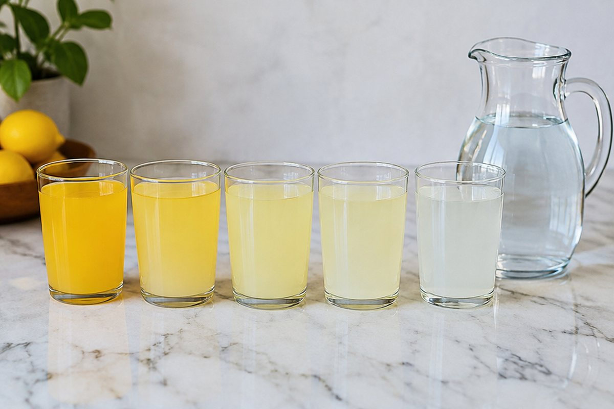

두 수를 나눗셈으로 비교해 볼까?

농구 슛을 20번 던져 7번 넣은 친구와 10번 던져 4번 넣은 친구 중 누가 더 잘 넣었을까요? 비와 비율을 알면 공정하게 비교할 수 있어요.
두 수를 비교하는 두 가지 방법
두 수는 뺄셈으로 비교할 수도 있고 나눗셈으로 비교할 수도 있어요. 모둠 수가 늘어날 때 사람 수와 도구 수의 차이는 변하지만, 몇 배인지는 변하지 않을 수 있어요.
이렇게 나눗셈으로 비교할 때 쓰는 것이 비예요. 두 수 3과 5를 비교할 때 기호 :을 써서 3 : 5라고 나타내요.
모둠원 4명, 가위 2개 → 사람 수는 가위 수의 2배 (4 : 2)
비 읽기와 기준량
3 : 5는 '3 대 5', '3과 5의 비', '5에 대한 3의 비', '3의 5에 대한 비'라고 읽어요.
비 3 : 5에서 기호 : 의 오른쪽에 있는 5는 기준량, 왼쪽에 있는 3은 비교하는 양이에요. 순서를 바꾸면 다른 비가 되니 조심해요.
3 : 5 → 비교하는 양 3, 기준량 5
비율과 백분율
기준량에 대한 비교하는 양의 크기를 비율이라고 해요. 비율 = 비교하는 양 ÷ 기준량이고, 분수나 소수로 나타내요. 3 : 5의 비율은 3/5 = 0.6이에요.
기준량을 100으로 할 때의 비율을 백분율이라 하고 기호 %를 써요. 비율에 100을 곱하면 백분율이 돼요. 0.6은 60%예요.
3 : 5 → 비율 3/5 = 0.6 → 백분율 60%
이렇게 풀어요: 생활 속 비율
슛 성공률: 20번 중 7번 → 7 ÷ 20 = 0.35 = 35%. 10번 중 4번 → 4 ÷ 10 = 0.4 = 40%. 그래서 두 번째 친구의 성공률이 더 높아요.
할인: 20000원짜리 물건을 25% 할인하면 ① 할인 금액 = 20000 × 25/100 = 5000원. ② 판매 가격 = 20000 − 5000 = 15000원이에요.
7 ÷ 20 = 0.35 (35%), 20000원의 25% = 5000원 → 15000원
핵심 낱말
- 비
- 두 수를 나눗셈으로 비교하기 위해 기호 :을 써서 나타낸 것
- 기준량
- 비에서 기호 : 의 오른쪽에 있는, 기준이 되는 양
- 비교하는 양
- 비에서 기호 : 의 왼쪽에 있는 양
- 비율
- 기준량에 대한 비교하는 양의 크기
- 백분율
- 기준량을 100으로 할 때의 비율, 기호 % 사용
한 줄 정리
- 비는 두 수를 나눗셈으로 비교할 때 기호 :을 써서 나타내요.
- 비율 = 비교하는 양 ÷ 기준량이고 분수나 소수로 나타내요.
- 백분율은 비율에 100을 곱하고 %를 붙여요.
학교 교육과정 연결
- [6수02-02] 두 양의 크기를 비교하는 상황을 통해 비의 개념을 이해하고, 두 양의 관계를 비로 나타낼 수 있다.
- [6수02-03] 비율을 이해하고, 비율을 분수, 소수, 백분율로 나타낼 수 있다.